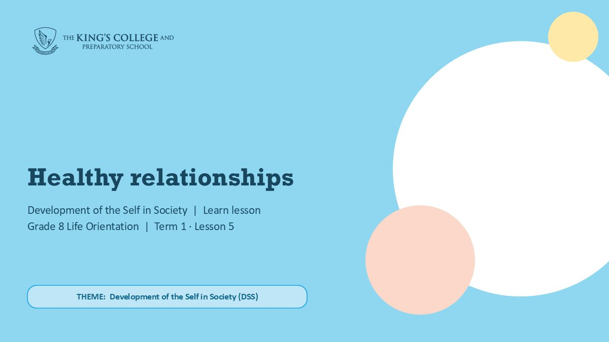

Term 1 · Lesson 5 · Learn lesson
Healthy relationships
Start here
Today I will
- Describe different relationships in my life
- Know how to start and keep a friendship
- Spot the signs of a healthy or unhealthy relationship
What is the difference between a friend and a follower?
Words to know
- Relationship
- An ongoing connection between people, like family, friends or teammates.
- Acquaintance
- Someone you know a little, but not well.
- Trust
- Believing someone is honest and will not hurt you.
- Respect
- Treating someone as valuable, even when you disagree.
- Boundary
- A line you set about what is OK and not OK for you.
- Active listening
- Giving someone your full attention and showing you understand.
Slides

Notes
We all live in relationships: with family, friends, teammates, teachers and people online. Healthy relationships make us feel safe and supported; unhealthy ones can hurt us.
Types of relationships
- Family: parents, guardians, brothers and sisters, grandparents.
- Friends: people you choose to spend time with and trust.
- Acquaintances: people you know a little, but not well (e.g. someone in your class you seldom talk to).
- Community: teachers, coaches, church members, neighbours.
- Online: people you chat with on social media or games. Be careful: people online are not always who they say they are.
Starting, keeping and ending a relationship
Starting: smile, greet the person and ask an easy, factual question ('Which school were you at?'). Then ask 'why' and 'how' questions to get to know them better. Active listening (full attention, not interrupting, asking follow-up questions) shows you care.
Keeping a friendship: make time for each other, keep promises, be honest, and keep secrets that are safe to keep. (A secret about someone being hurt or in danger is NOT safe to keep; tell a trusted adult.)
Ending a relationship: sometimes a friendship becomes harmful and needs to end. Do it honestly and kindly, in person, without gossip or posting about it.
Healthy vs unhealthy relationships
| Healthy | Unhealthy (warning signs) |
|---|---|
| Respects your 'no' and your boundaries | Pressures, guilt-trips or threatens you |
| Happy when you succeed | Puts you down or mocks you, even 'as a joke' |
| Honest; keeps your trust | Lies, gossips or shares your private things |
| Encourages good choices | Encourages risky or wrong choices |
A boundary is a line you set about what is OK and not OK for you. Healthy friends respect your boundaries. If a relationship feels unsafe, talk to a parent, teacher, the school counsellor or Childline (116).
A biblical view
Proverbs 17:17 says a friend loves at all times. A true friend stays loyal in hard times, speaks truth kindly and wants what is best for you.
Why relationships matter
God created us to live in relationship with Him and with other people. Good relationships give us support when life is hard, help us grow, and make life more joyful. Research also shows that teenagers with at least one trusted adult and a few good friends cope better with stress and make safer choices.
Communication: the heart of every relationship
- Listen more than you speak: give full attention and don't plan your answer while the other person is talking.
- Ask open questions ('How did it go?') instead of yes/no questions.
- Watch body language: eye contact and facing the person show you care.
- Be honest and kind at the same time.
- Online: remember that tone is easily misunderstood in messages. If it matters, talk face to face.
Case study: Mia, Thabo and Aarav
Mia, Thabo and Aarav have been friends since Grade 1. In Grade 8 they are in different classes and each joined new sports (Mia plays netball with Coach Didi, Thabo started basketball, Aarav plays cricket with Coach Des). They see each other less and Mia feels left out when the boys make plans in a group chat without her. Instead of gossiping, she tells them honestly how she feels. They agree to have lunch together every Friday, no matter how busy they are.
Questions to think about: What could have damaged the friendship? Which skills helped keep it strong? How do friendships change when you start high school?
Signs that a relationship is unsafe
Some relationships go beyond 'unhealthy' and become unsafe: when someone threatens you, hurts you physically, controls who you talk to, or asks you to keep secrets that make you feel uncomfortable. In these cases, talk to a trusted adult immediately: a parent, teacher, the school counsellor, or Childline on 116 (free, 24 hours).
Worked exam answer
Question: Recommend ONE way to keep a friendship strong when you start high school. (1 x 2) (2)
Answer: Make regular time to see each other, such as lunch every Friday ✓, so that you stay connected even when you are busy with different activities ✓.
Be able to name types of relationships, explain how to start or keep a friendship (point + reason), and give signs of a healthy and an unhealthy relationship.
Good friends make you feel safe to be yourself.
The Bible says a true friend loves at all times. What does that look like when a friend is going through a hard time?
In class: Friendship scenarios
- Read the scenario: a new friend in Mia's class keeps 'joking' in the group chat about Mia's Afrikaans accent.
- Is this healthy or unhealthy? Why?
- What could Mia say to her? What could Thabo and Aarav do?
- Who could Mia talk to?
- Each group shares one idea.
Test yourself
- What is an acquaintance?
- Name two signs of a healthy friendship.
- What is a boundary?
Show answers
1. Someone you know a little but not well. 2. Any two: respect, trust, support, honesty, accepts your no. 3. A line about what is OK or not OK for you.
Finished early?
Plan how you would help a new learner feel welcome.
- Imagine a new learner joins your class mid-term and sits alone at break.
- In your LO book, write how you would start a conversation: a greeting and an easy, factual question.
- Add two 'why' or 'how' follow-up questions you could ask to get to know them better.
- Write one way you could help the friendship last (keep it practical).